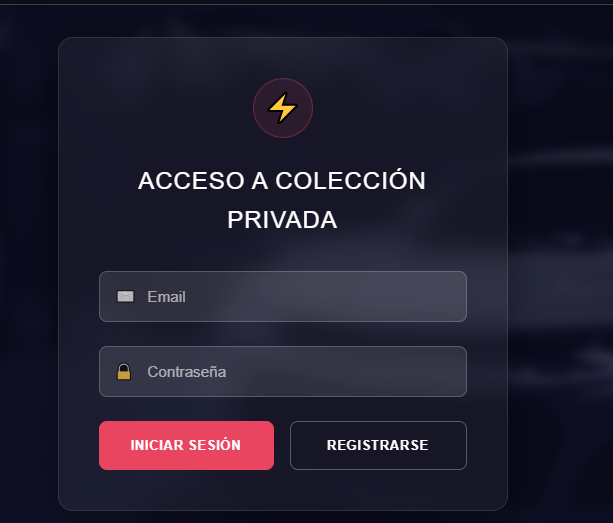

Manual de Usuario - Galeria de Automóviles
Bienvenido a Garage de Lujo, la aplicación para amantes de los automóviles exclusivos. Esta plataforma te permite descubrir y coleccionar imágenes de alta calidad de los vehículos más lujosos del mundo.
Encuentra autos exclusivos con nuestra tecnología de búsqueda avanzada
Guarda tus autos favoritos en tu galería personal
Tus colecciones se guardan de forma segura y privada
Al abrir la aplicación, verás la pantalla de inicio de sesión. Si eres nuevo usuario, deberás registrarte primero.
Haz clic en "REGISTRARSE" y completa los campos requeridos:
Después de registrarte, o si ya tienes una cuenta:
En la pestaña "DESCUBRIR":
Si te gusta el auto que aparece:
Para ver tus autos guardados:
Para quitar un auto de tu colección:
Si no tienes autos guardados:
Para salir de tu cuenta de forma segura: